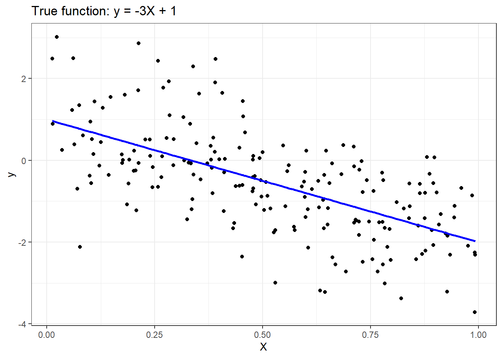
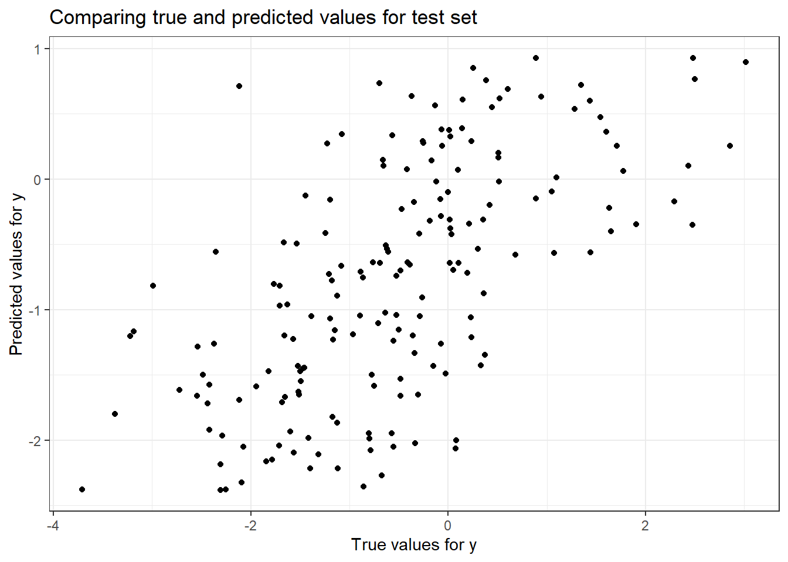
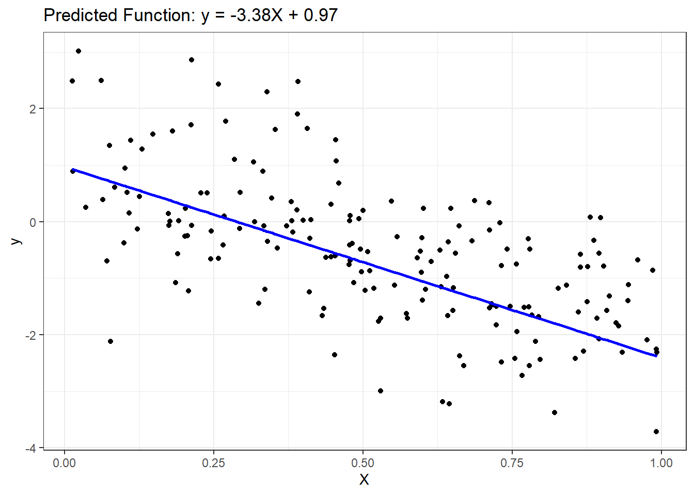

# Required packages
if (!require(pacman))
install.packages("pacman")
pacman::p_load(tidymodels,
tidyverse,
ranger,
randomForest,
glmnet,
gridExtra)
# Global ggplot theme
theme_set(theme_bw() + theme(legend.position = "top"))Regression in R
Basic Concepts Regression Techniques
Install packages
Installing the packages used.
Regression is a modeling technique for predicting quantitative-valued target attributes. The goals for this tutorial are as follows:
- To provide examples of using different regression methods from the tidymodels package.
- To demonstrate the problem of model overfitting due to correlated attributes in the data.
- To illustrate how regularization can be used to avoid model overfitting.
Synthetic Data Generation
To illustrate how linear regression works, we first generate a random 1-dimensional vector of predictor variables, x, from a uniform distribution. The response variable y has a linear relationship with x according to the following equation: y = -3x + 1 + epsilon, where epsilon corresponds to random noise sampled from a Gaussian distribution with mean 0 and standard deviation of 1.
seed <- 1
numInstances <- 200
set.seed(seed)
X <- matrix(runif(numInstances), ncol = 1)
y_true <- -3 * X + 1
y <- y_true + matrix(rnorm(numInstances), ncol = 1)
ggplot() +
geom_point(aes(x = X, y = y), color = "black") +
geom_line(aes(x = X, y = y_true),
color = "blue",
linewidth = 1) +
ggtitle('True function: y = -3X + 1') +
xlab('X') +
ylab('y')
Multiple Linear Regression
Given the input dataset, the following steps are performed:
- Split the input data into their respective training and test sets.
- Fit multiple linear regression to the training data.
- Apply the model to the test data.
- Evaluate the performance of the model.
- Post-processing: Visualizing the fitted model.
Step 1: Split Input Data into Training and Test Sets
numTrain <- 20
numTest <- numInstances - numTrain
set.seed(123)
data <- tibble(X = X, y = y)
split_obj <- initial_split(data, prop = numTrain/numInstances)
train_data <- training(split_obj)
test_data <- testing(split_obj)
X_train <- train_data$X
y_train <- train_data$y
X_test <- test_data$X
y_test <- test_data$yStep 2: Fit Regression Model to Training Set
lin_reg_spec <- linear_reg() |>
set_engine("lm")
lin_reg_fit <- lin_reg_spec |>
fit(y ~ X, data = train_data)Step 3: Apply Model to the Test Set
y_pred_test <- predict(lin_reg_fit, new_data = test_data) |>
pull(.pred)Step 4: Evaluate Model Performance on Test Set
ggplot() +
geom_point(aes(x = as.vector(y_test), y = y_pred_test), color = 'black') +
ggtitle('Comparing true and predicted values for test set') +
xlab('True values for y') +
ylab('Predicted values for y')
eval_data <- tibble(truth = as.vector(y_test),
estimate = y_pred_test)
rmse_value <-
rmse(data = eval_data,
truth = truth,
estimate = estimate)
r2_value <- rsq(eval_data, truth = truth, estimate = estimate)
cat("Root mean squared error =",
sprintf("%.4f", rmse_value$.estimate),
"\n")Root mean squared error = 1.0273 cat('R-squared =', sprintf("%.4f", r2_value$.estimate), "\n")R-squared = 0.3911 Step 5: Post-processing
coef_values <- coef(lin_reg_fit$fit)
slope <- coef_values["X"]
intercept <- coef_values["(Intercept)"]
cat("Slope =", slope, "\n")Slope = -3.376872 cat("Intercept =", intercept, "\n")Intercept = 0.9723522 ggplot() +
geom_point(aes(x = as.vector(X_test), y = as.vector(y_test)), color = 'black') +
geom_line(aes(x = as.vector(X_test), y = y_pred_test),
color = 'blue',
linewidth = 1) +
ggtitle(sprintf('Predicted Function: y = %.2fX + %.2f', slope, intercept)) +
xlab('X') +
ylab('y')
Ridge Regression
train_data <- tibble(y = y_train, X_train5)
test_data <- tibble(y = y_test, X_test5)
ridge_spec <- linear_reg(penalty = 0.4, mixture = 1) |>
set_engine("glmnet")
ridge_fit <- ridge_spec |>
fit(y ~ ., data = train_data)
y_pred_train_ridge <-
predict(ridge_fit, new_data = train_data)$.pred
y_pred_test_ridge <- predict(ridge_fit, new_data = test_data)$.pred
y_pred_train_ridge <-
predict(ridge_fit, new_data = train_data)$.pred
y_pred_test_ridge <- predict(ridge_fit, new_data = train_data)$.pred
calculate_rmse <- function(actual, predicted) {
rmse <- sqrt(mean((actual - predicted) ^ 2))
rmse
}
ridge_coef <- coefficients(ridge_fit$fit)
model6 <-
sprintf(
"%.2f X + %.2f X2 + %.2f X3 + %.2f X4 + %.2f X5 + %.2f",
ridge_coef[2],
ridge_coef[3],
ridge_coef[4],
ridge_coef[5],
ridge_coef[6],
ridge_coef[1]
)
values6 <- tibble(
Model = model6,
Train_error = calculate_rmse(y_train, y_pred_train_ridge),
Test_error = calculate_rmse(y_test, y_pred_test_ridge),
Sum_of_Absolute_Weights = sum(abs(ridge_coef))
)
final_results <- bind_rows(results, values6)
final_results# A tibble: 5 × 4
Model Train_error Test_error Sum_of_Absolute_Weig…¹
<chr> <dbl> <dbl> <dbl>
1 -0.53 X + -1.05 1.33 1.30 3.64
2 0.34 X + 20.99 X2 + -1.05 1.26 1.35 62.8
3 0.07 X + 22.72 X2 + -66.35 X3 +… 1.18 1.49 137.
4 -1.83 X + 22.46 X2 + -63.04 X3 … 1.17 1.53 178.
5 0.00 X + 0.00 X2 + 0.00 X3 + 0.… 1.35 1.29 8581.
# ℹ abbreviated name: ¹Sum_of_Absolute_WeightsLasso Regression
lasso_spec <- linear_reg(penalty = 0.02, mixture = 1) |>
set_engine("glmnet")
train_data <-
tibble(
y = y_train,
X1 = X_train5[, 1],
X2 = X_train5[, 2],
X3 = X_train5[, 3],
X4 = X_train5[, 4],
X5 = X_train5[, 5]
)
lasso_fit <- lasso_spec |>
fit(y ~ ., data = train_data)
lasso_coefs <- lasso_fit$fit$beta[, 1]
lasso_coefsX1 X2 X3 X4 X5
0 0 0 0 0 y_pred_train_lasso <-
predict(lasso_fit, new_data = train_data)$.pred
y_pred_test_lasso <-
predict(
lasso_fit,
new_data = tibble(
X1 = X_test5[, 1],
X2 = X_test5[, 2],
X3 = X_test5[, 3],
X4 = X_test5[, 4],
X5 = X_test5[, 5]
)
)$.pred
model7 <-
sprintf(
"%.2f X + %.2f X2 + %.2f X3 + %.2f X4 + %.2f X5 + %.2f",
lasso_coefs[2],
lasso_coefs[3],
lasso_coefs[4],
lasso_coefs[5],
lasso_coefs[6],
lasso_fit$fit$a0[1]
)
values7 <- c(model7,
sqrt(mean((
y_train - y_pred_train_lasso
) ^ 2)),
sqrt(mean((
y_test - y_pred_test_lasso
) ^ 2)),
sum(abs(lasso_coefs[-1])) + abs(lasso_fit$fit$a0[1]))lasso_results <- tibble(
Model = "Lasso",
`Train error` = values7[2],
`Test error` = values7[3],
`Sum of Absolute Weights` = values7[4]
)
lasso_results# A tibble: 1 × 4
Model `Train error` `Test error` `Sum of Absolute Weights`
<chr> <chr> <chr> <chr>
1 Lasso 1.22083472815552 1.36447668533408 0.750560758224512 Hyper-parameter Selection via Cross-Validation
Fitting a ridge regression model by selecting the best hyper-parameter value
y_train <- as.vector(y_train)
train_data <- tibble(y = y_train, X1 = X_train5[,1], X2 = X_train5[,2],
X3 = X_train5[,3], X4 = X_train5[,4], X5 = X_train5[,5])
recipe_obj <- recipe(y ~ ., data = train_data) |>
step_normalize(all_predictors()) |>
prep()ridge_spec <- linear_reg(penalty = tune(), mixture = 0) |>
set_engine("glmnet")
ridge_wf <- workflow() |>
add_model(ridge_spec) |>
add_recipe(recipe_obj)
# alphas for ridge regression
alphas <- tibble(penalty = c(0.2, 0.4, 0.6, 0.8, 1.0))
# tuning the results for ridge regression
tune_results <-
ridge_wf |>
tune_grid(
resamples = bootstraps(train_data, times = 5),
grid = alphas
)best_params <- tune_results |> select_best("rmse")
ridge_fit <- ridge_spec |>
finalize_model(best_params) |>
fit(y ~ ., data = train_data)
ridge_coefs <- ridge_fit$fit$beta[,1]
y_pred_train_ridge <- predict(ridge_fit, new_data = train_data)$.pred
y_pred_test_ridge <- predict(ridge_fit, new_data = tibble(X1 = X_test5[,1], X2 = X_test5[,2],
X3 = X_test5[,3], X4 = X_test5[,4], X5 = X_test5[,5]))$.predmodel6 <- sprintf("%.2f X + %.2f X2 + %.2f X3 + %.2f X4 + %.2f X5 + %.2f",
ridge_coefs[2], ridge_coefs[3], ridge_coefs[4],
ridge_coefs[5], ridge_coefs[6], ridge_fit$fit$a0[1])
values6 <- c(model6,
sqrt(mean((y_train - y_pred_train_ridge)^2)),
sqrt(mean((y_test - y_pred_test_ridge)^2)),
sum(abs(ridge_coefs[-1])) + abs(ridge_fit$fit$a0[1]))ridge_results <- tibble(Model = "RidgeCV",
`Train error` = values6[2],
`Test error` = values6[3],
`Sum of Absolute Weights` = values6[4])
cat("Selected alpha =", best_params$penalty, "\n")Selected alpha = 1 all_results <- bind_rows(results, ridge_results)
all_results# A tibble: 5 × 7
Model Train_error Test_error Sum_of_Absolute_Weig…¹ `Train error` `Test error`
<chr> <dbl> <dbl> <dbl> <chr> <chr>
1 -0.5… 1.33 1.30 3.64 <NA> <NA>
2 0.34… 1.26 1.35 62.8 <NA> <NA>
3 0.07… 1.18 1.49 137. <NA> <NA>
4 -1.8… 1.17 1.53 178. <NA> <NA>
5 Ridg… NA NA NA 1.3309131350… 1.295979736…
# ℹ abbreviated name: ¹Sum_of_Absolute_Weights
# ℹ 1 more variable: `Sum of Absolute Weights` <chr>Fitting a lasso regression model by selecting the best hyper-parameter value
set.seed(1234)
y_train <- as.vector(y_train)
train_data <- tibble(y = y_train, X1 = X_train5[,1], X2 = X_train5[,2],
X3 = X_train5[,3], X4 = X_train5[,4], X5 = X_train5[,5])
recipe_obj_lasso <- recipe(y ~ ., data = train_data) |>
step_normalize(all_predictors()) |>
prep()lasso_spec <- linear_reg(penalty = tune(), mixture = 1) |>
set_engine("glmnet")
lasso_wf <- workflow() |>
add_recipe(recipe_obj_lasso)
lasso_fit <- lasso_wf |>
add_model(lasso_spec) |>
fit(data = train_data)
lambda_grid <- grid_regular(penalty(), levels = 50)
tune_results_lasso <-
tune_grid(lasso_wf |> add_model(lasso_spec),
resamples = bootstraps(train_data, times = 5),
grid = lambda_grid
)
best_params_lasso <- tune_results_lasso |> select_best("rmse")
lasso_fit <- lasso_spec |>
finalize_model(best_params_lasso) |>
fit(y ~ ., data = train_data)
lasso_coefs <- lasso_fit$fit$beta[,1]y_pred_train_lasso <- predict(lasso_fit, new_data = train_data)$.pred
y_pred_test_lasso <- predict(lasso_fit, new_data = tibble(X1 = X_test5[,1], X2 = X_test5[,2],
X3 = X_test5[,3], X4 = X_test5[,4], X5 = X_test5[,5]))$.pred
model7 <- sprintf("%.2f X + %.2f X2 + %.2f X3 + %.2f X4 + %.2f X5 + %.2f",
lasso_coefs[2], lasso_coefs[3], lasso_coefs[4],
lasso_coefs[5], lasso_coefs[6], lasso_fit$fit$a0[1])
values7 <- c(model7,
sqrt(mean((y_train - y_pred_train_lasso)^2)),
sqrt(mean((y_test - y_pred_test_lasso)^2)),
sum(abs(lasso_coefs[-1])) + abs(lasso_fit$fit$a0[1]))lasso_results <- tibble(Model = "LassoCV",
`Train error` = values7[2],
`Test error` = values7[3],
`Sum of Absolute Weights` = values7[4])
cat("Selected alpha for Lasso =", best_params_lasso$penalty, "\n")Selected alpha for Lasso = 0.6250552 lasso_results# A tibble: 1 × 4
Model `Train error` `Test error` `Sum of Absolute Weights`
<chr> <chr> <chr> <chr>
1 LassoCV 1.34525910987747 1.28985807470116 0.750560758224512